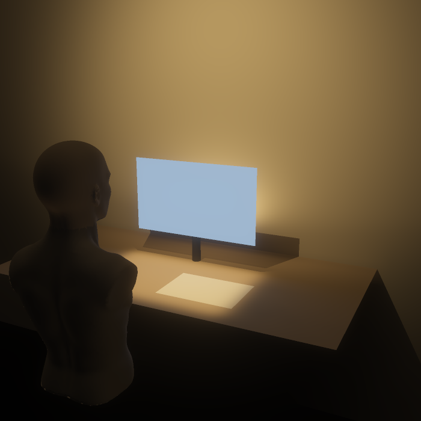

Ei lampe som gjer ein plass i heimen til arbeidsplass og til heim att, som gjev arbeidslys utan blending, og som eigaren kan reparere.
Hybridarbeidaren, heime ein til to dagar i veka, i eit rom som òg er stove eller kjøken. 45,1 % har heimekontor, berre 5,7 % minst halve tida.

